Engineer + Designer + Leader
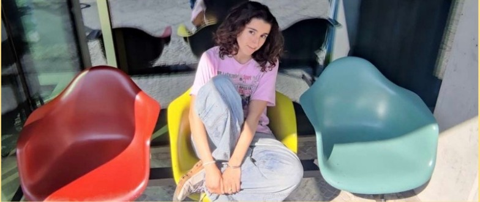
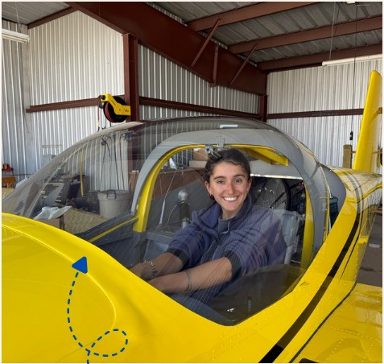
Hi I'm Leilani! Welcome to my portfolio! I am an engineer who loves to combine deep technical expertise with design thinking and creative problem solving. My greatest strength is my ability to adapt and learn quickly, diving in head first to build upon my experience and rise to the task at hand. This is something I've honed through a broad range of unique experiences and projects. I'm a dedicated team member and love to assess the team and design space and move forward where I am most needed.
Currently you can find me running an adaptive design workshop in rural Kenya where I am training teachers to fabricate assistive tech for their learners. With boots on the ground at school I've been chewing on designing for simple fabrication, extreme affordability so that we can harness design to overcome challenges of complex disabilities.
I am excited to enter industry with curiosity and enthusiasm as I continue to grow…
Leading a team of 7 peers in robotic automation of a new class of bioreactors in the cell and gene therapy space. The company will deploy this in server-farm-like clean rooms for mass production of life-saving biologics.
Learn More →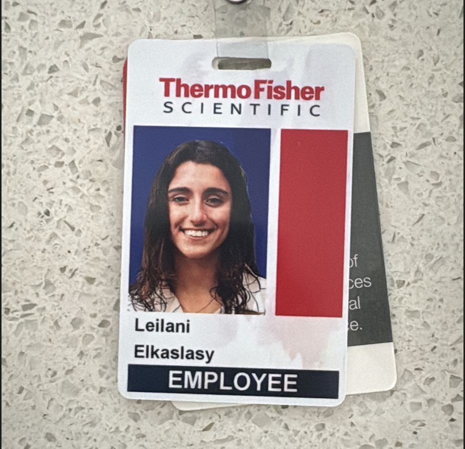
Worked in the experience design center as a product designer and sustainability consultant to different instrument teams and business units as part of a multidisciplinary tiger team.
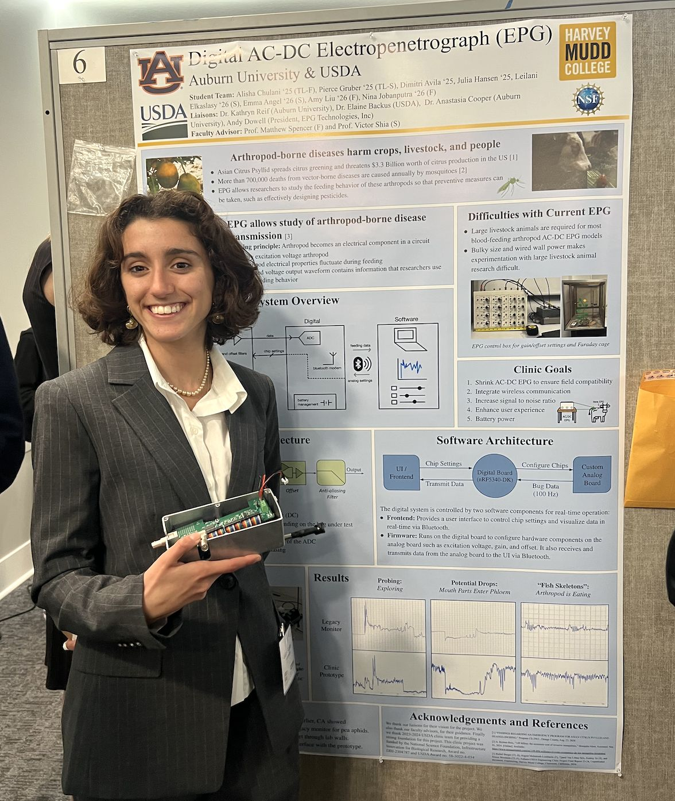
Collaborated with peers, USDA, and Auburn University to digitize an entomology research tool (electropenetrography) used to study insect feeding behavior, designing and verifying a hand-held Bluetooth-enabled system to replace the legacy instrument, which previously required 8x4 feet of bench space.
Learn More →Designed and fabricated adapted technologies, consulting with occupational therapists, educators, and families to ensure client needs were met.
Progressed from intern to marine ecology instructor and scuba diving guide, to leading the Bahamas program — overseeing a 60' sailboat, 5 crew members, and 20 students for Summer 2021. Created a new place-based science curriculum, and worked as a Divemaster (3 years, taught and led 200 divers) and Program Lead (1 year) while maintaining and operating yachts and overseeing young adults ages 12–22.
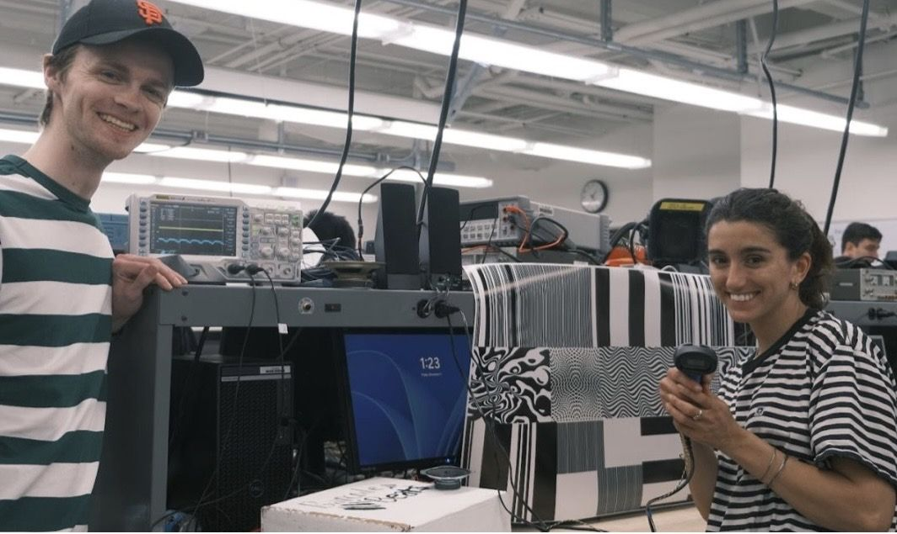
Built a digital synthesizer out of a barcode scanner by implementing a digital signal processing pipeline on an FPGA and MCU that manipulates a square-wave input from a barcode scanner to output an audible frequency-modulated sine wave in response to scanning a barcode pattern.
Learn More →Series of embedded systems projects on MCU and FPGA for E155 demonstrating mastery of MCU and FPGA programming and communication protocols.
Learn More →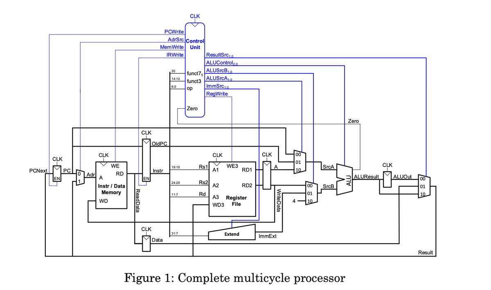
Designed and implemented a multicycle RISC-V processor in SystemVerilog with unified memory and modified control signals. Simulated and verified functionality on Intel Quartus, achieving full test coverage and adapting single-cycle components developed in previous coursework.
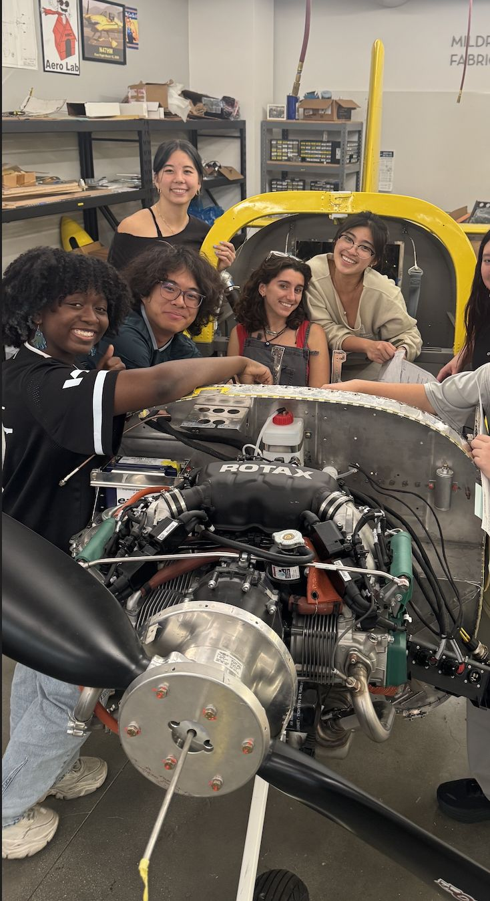
Built a Vans RV12is two-seat light sport aircraft fabricated primarily from sheet metal and pop rivets, with a 100 horsepower Rotax engine and Garmin VFR avionics. Aircraft completed FAA inspections. Helped assemble the plane body and installed all avionics.
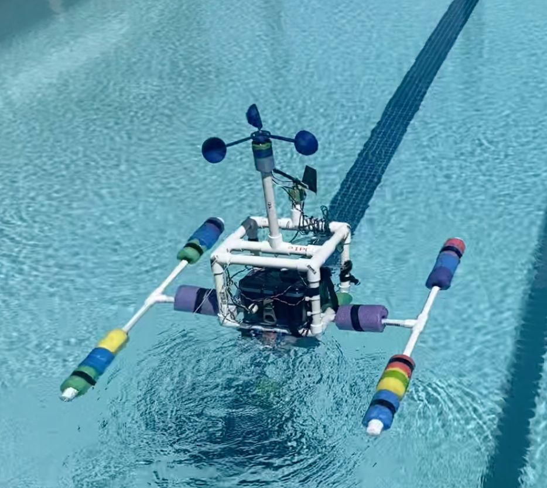
Designed and deployed an Autonomous Surface Vehicle to compare different hydrodynamics of cone and dome shaped nose cones in the ocean, comparing simulation to reality in a non-ideal environment. The robot measured its own velocity and applied drag force while autonomously navigating a predetermined route using an embedded GPS.
Learn More →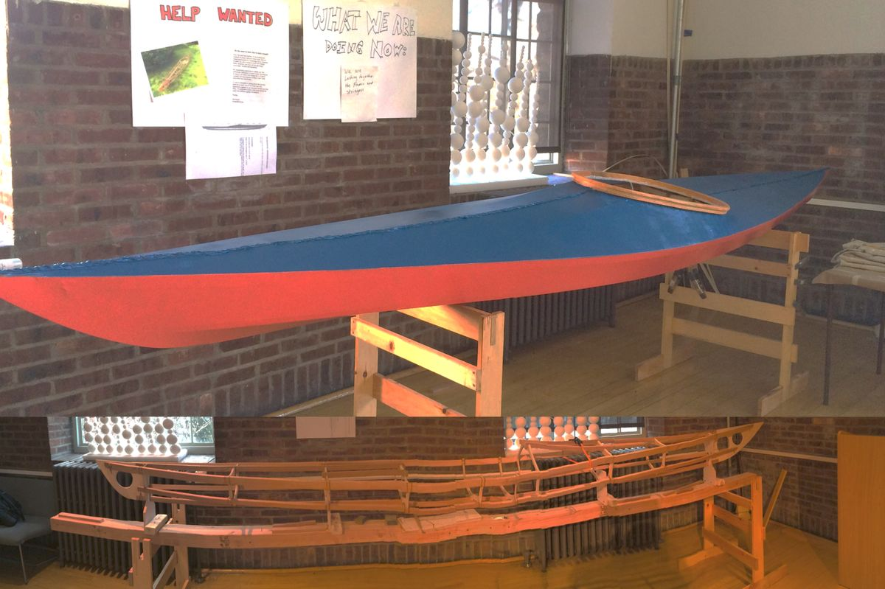
Designed and built a skin on frame kayak out of wood and treated canvas.
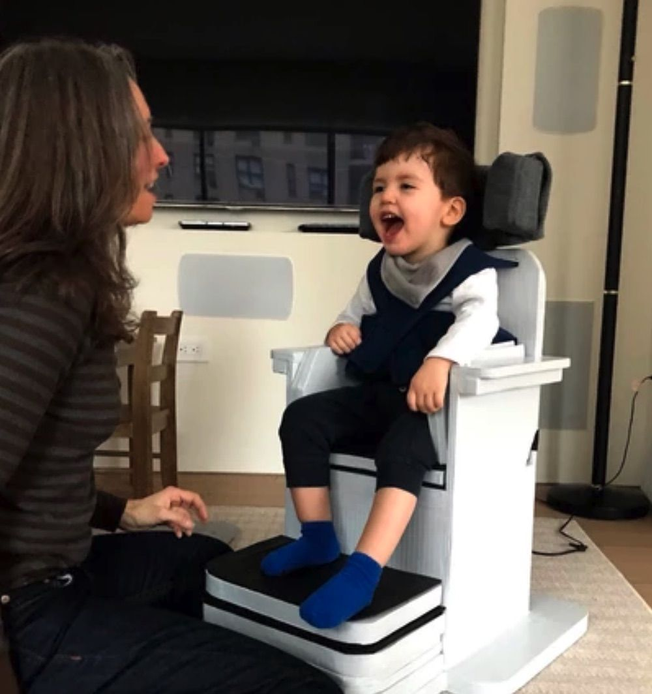
Built a series of assistive devices including chairs, communication tools, and mobility devices during my tenure at the Adaptive Design Association.
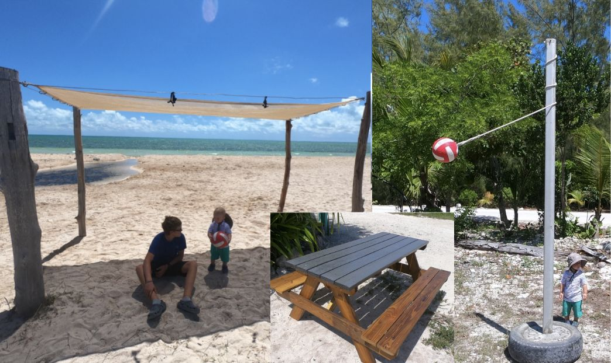
After talking to the Cape Eleuthera community and discovering what infrastructure could increase beach accessibility and recreation, I built a tetherball net out of a reclaimed sailboat mast, tire and concrete; built and installed a retractable shade structure out of self-milled invasive casuarina pine; and built a picnic table out of junkyard wood and rubber lumber.
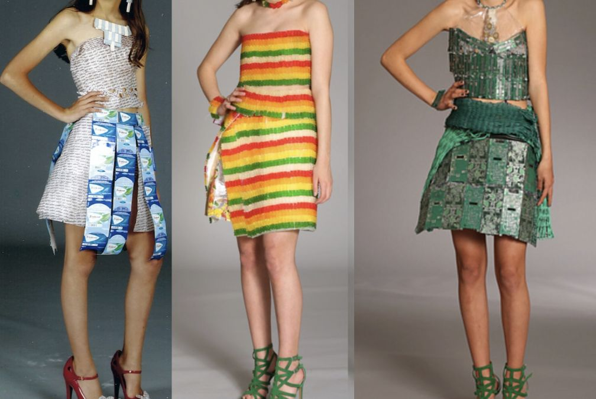
Built wearable sculptures out of recycled e-waste, gummy bears and gum wrappers. All pieces involved attaching components to each other without the use of a base.
Created a passive watering system by making and installing hoyas, a traditional indigenous way of watering plants through porous clay; an adobe native wildflower seed bomb pollinator garden to support native species; chicken furniture to support enrichment for the chickens; restored a neglected pomelo tree with new tree supports; and created fruit bowls placed throughout campus for students to eat fruit grown in the garden. A collaborative effort with the garden steward and a group of artists.
Harvey Mudd College
Developed a novel ceramic resin and calculated the average abrasiveness of available commercial resins for stereolithography 3-D printing. Co-authored 3 abstracts and 2 posters presented and published through the Society of Tribologists and Lubricant Engineers 2025 conference.
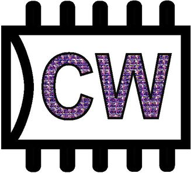
Harvey Mudd College
Volunteered for the Clay-Wolkin Fellowship at Harvey Mudd designing Wally, a CORE-V RISC-V microprocessor in collaboration with the Open Hardware Group. Involved in design and verification of the processor, and co-developed a Python script that automates a daily run of all test benches, updating the team of bugs daily.
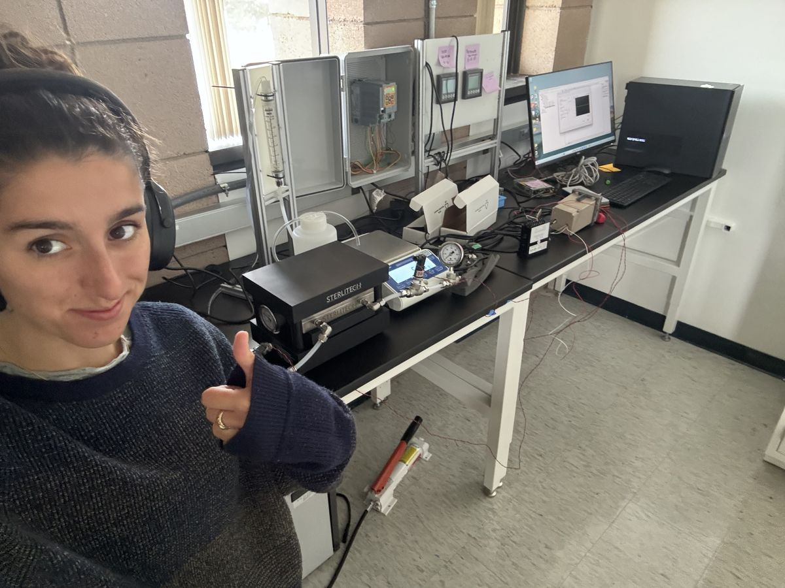
Harvey Mudd College
Built a fully automated bench-scale reverse osmosis system using LabVIEW to reduce manual testing time by 90%, enabling multi-day continuous operation. Research supports optimization of power plant water reuse.
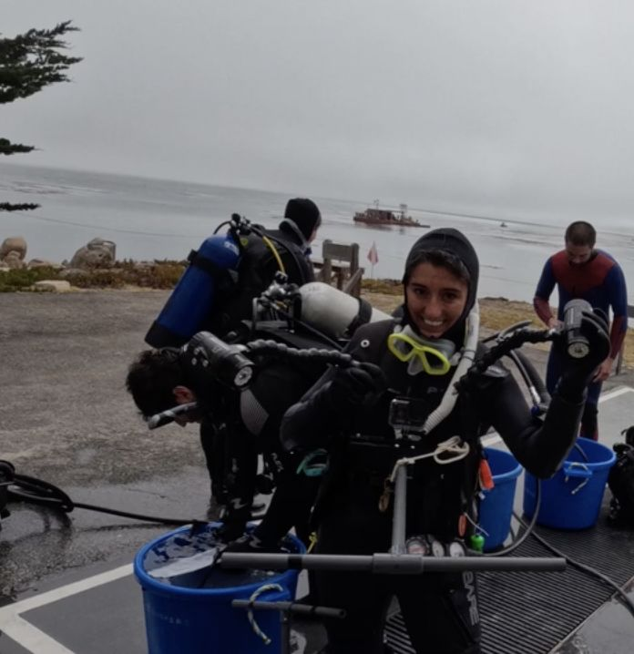
Stanford's Hopkins Marine Station
Conducted underwater diving surveys of local giant kelp forests, continuing the longest running kelp dataset (30 years). Co-created an open-source database of benthic and ocean floor survey videos for national research efforts, and designed and conducted an original research project investigating nudibranch and sea sponge interdependence.
Eleuthera, Bahamas
Part of a team of 8 students who worked with the local primary school to tutor struggling readers and lead a weekly library hour for students grades 2 through 5. We designed a reading outreach model and data collection methods to research the impact of student tutoring — students improved by an average of two reading levels over a semester, 2x the average rate — and presented results to the Bahamian Minister of Education.
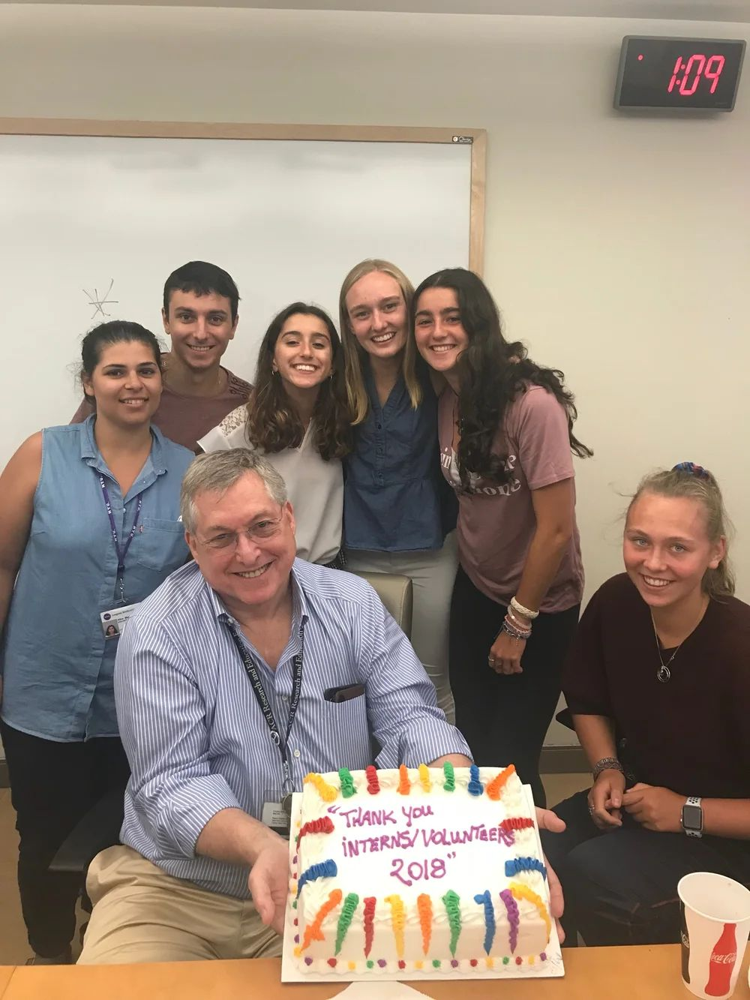
NYU Langone Medical Center
Researched the effect of a novel drug on osteoarthritis and wrote a paper.
I'm honored to have been awarded a Thomas J. Watson Fellowship — a one-year grant for purposeful, independent exploration outside the United States, awarded to 39 graduating seniors nationwide with unusual promise.
Project
Argentina · Brazil · Kenya · Egypt · Thailand
What does it mean to be disabled? How can small adaptations help people with disabilities thrive? Collaborating with people with disabilities and communities that support them, my year uses the medium of Adaptive Design to find answers to these questions.
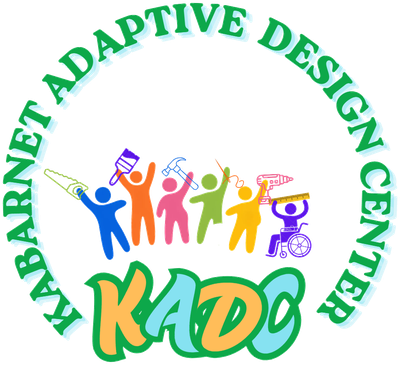
Learn about my time with Kabarnet School for the DeafBlind — starting a workshop and training the teachers in adaptive design so that we can improve how we support learners' wellbeing.
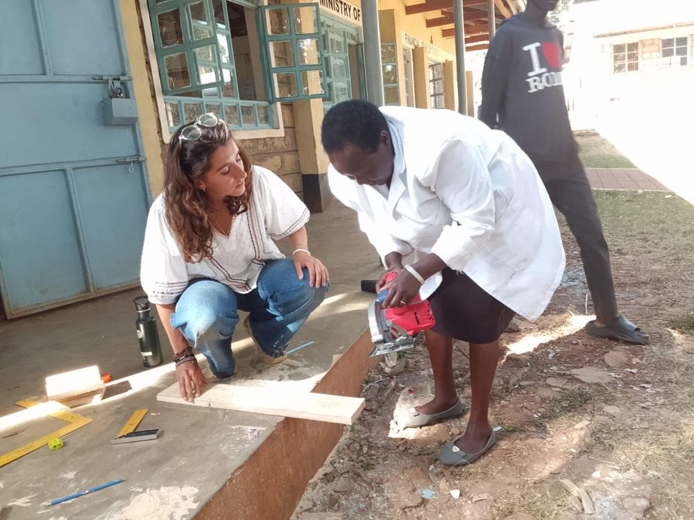